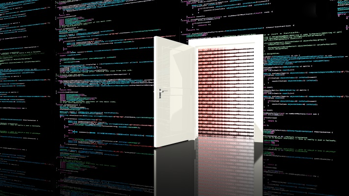
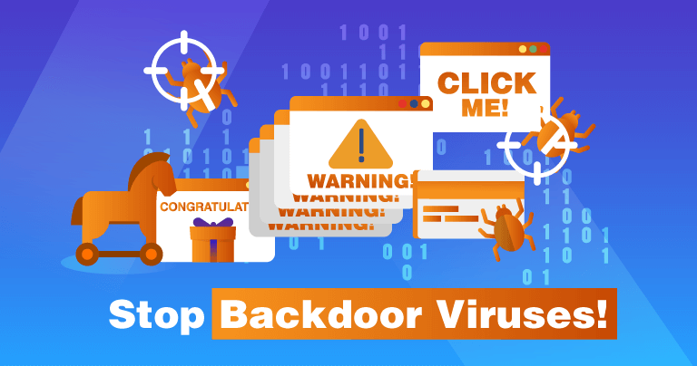

Once hackers log into your machine without your knowledge, they can use backdoors for a variety of reasons, such as:
Surveillance.
Data theft.
Cryptojacking.
Sabotage.
Malware attack.
What Is a Backdoor & How Does It Work?
In cybersecurity, a backdoor is anything that can allow an outside user into your device without your knowledge or permission. Backdoors can be installed in two different parts of your system:
- Hardware/firmware. Physical alterations that provide remote access to your device.
- Software. Malware files that hide their tracks so your operating system doesn't know that another user is accessing your device.
A backdoor can be installed by software and hardware developers for remote tech support purposes, but in most cases, backdoors are installed either by cybercriminals or intrusive governments to help them gain access to a device, a network, or a software application. Any malware that provides hackers access to your device can be considered a backdoor - this includes rootkits, trojans, spyware, cryptojackers, keyloggers, worms, and even ransomware.

How Do Backdoor Attacks Work?
In order for cybercriminals to successfully install a backdoor on your device, they first need to gain access to your device, either through physical access, a malware attack, or by exploiting a system vulnerability - here are some of the more common vulnerabilities that hackers target:
- Open ports.
- Weak passwords.
- Out-of-date software.
- Weak firewalls.
So, once a malware file infects your device, or your device is physically compromised (stolen or broken into), or you become the target of an exploit attack, hackers can install a backdoor on your system.
Here are a few examples of the different kinds of backdoors that are frequently used:
- Trojans
- Rootkits
- Hardware backdoors
- Cryptographic backdoors
Best Ways to Prevent Backdoor Attacks
Backdoors are difficult to detect. Everyday users can't discover a backdoor just by opening the Task Manager. But there are a few easy steps you can take to keep your device safe from backdoors virus attacks, such as:
-
Use an Antivirus
Always use advanced antivirus software that can detect and prevent a wide range of malware, including trojans, cryptojackers, spyware, and rootkits. An antivirus will detect backdoor viruses and eliminate them before they can infect your computer. Good antivirus software like Norton 360 also includes tools like Wi-Fi monitoring, an advanced firewall, web protection, and microphone and webcam privacy monitoring to ensure you're as safe as possible online.
-
Download with Care
Backdoors are often bundled with seemingly legitimate free software, files, and applications. When downloading any file from the internet, check to see if you're only getting the file you wanted, or if there are some nasty hitchhikers coming along for the ride. Even a file that behaves like the file you're looking for could be a trojan. Make sure to always download from official websites, avoid pirate sites, and install an antivirus with real-time protection that can flag malware files before you even download them onto your system.
-
Use a Firewall
Firewalls are essential for anti-backdoor protection - they monitor all incoming and outgoing traffic on your device. If someone outside of your approved network is trying to get into your device, the firewall will block them out, and if an app on your device is trying to send data out to an unknown network location, the firewall will block that app, too.
Advanced firewalls can detect unauthorized backdoor traffic even when your device's malware detection has been fooled. Windows and macOS both have pretty decent built-in firewalls, but they're not good enough. There are a few antivirus programs with good firewalls (McAfee has excellent network protections) and you can also consider purchasing a smart firewall, which is a physical device that you connect to your router to keep your network as safe as possible. -
Use a Password Manager
Password managers generate and store login information for all your accounts and even help you log into them automatically. All of this information is securely encrypted using 256-bit AES encryption and locked behind a master password. Advanced password managers like Dashlane can even enhance your password vault's security using biometric login or 2FA tools like TOTP generators and USB tokens. Because they generate random, complex passwords, password managers make it a lot harder for hackers to get into your network or spread across your network in the event that you get a backdoor installed on your system.
-
Stay on Top of Security Updates/Patches
Zero-day attacks are pretty rare, and most hackers just recycle the same exploits and malware because it's cheap and easy for them to do so. Plus, it works. One in three IT professionals (34%) in Europe admitted that their company had been breached as a result of an unpatched vulnerability.
Software developers frequently publish new patches to fix the vulnerabilities in their software, and it's not hard to install those updates. Many programs even include an auto-update option. If you're a macOS or Windows user, navigate to your settings and turn "Automatic Updates" on - it's especially important to keep your OS updated because backdoors depend on fooling your operating system.
